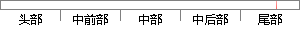

具体步骤是先进行需求分析，然后做系统设计，再运用Python、Flask、mysql、javascript、html等web技术开发了一个校园二手物品交易系统，最后以论文的形式详细阐述本课题所解决的生产生活中的问题，以及论述为完成本次毕业设计所采用的技术、系统开发的主要工作等。
片段位置图

相似结果|
1
原句片段：，以及论述为完成本次毕业设计所采用的技术、系统开发的主要工作等。
相似片段 1：主要论述了系统开发的背景以及意义。对目前国内的网络...介绍了本系统开发过程需要用的开发工具跟一些技术。...由于本次毕业设计由自己一个人设计完成制作,对我这样...
|
※ 片段修改建议 ※
近似词参考：- 先进：进步前辈 先辈
- 进行：举行
- 分析：阐发 阐明 剖析
- 系统：体系
- 设计：计划
- 运用：应用
- 最后：末了
- 形式：情势
- 详细：具体 细致
- 阐述：论述
- 解决：办理
- 生产：出产 临盆
- 产生：发生 孕育发生
- 生活：糊口 生涯 生存
- 问题：题目
- 以及：和
- 论述：阐述 论说 叙述
- 成本：本钱
- 采用：采取 接纳 采纳
- 技术：手艺 技能
- 主要：首要 重要
- 工作：事情
系统自动生成语句：具体步骤是进步前辈行需求阐发，然后做体系计划，再应用Python、Flask、mysql、javascript、html等web手艺开发了一个校园二手物品交易体系，末了以论文的情势具体阐述本课题所办理的出产糊口中的题目，和阐述为完本钱次毕业计划所采取的手艺、体系开发的首要事情等。
注：本片段修改建议为系统自动生成，仅供参考。